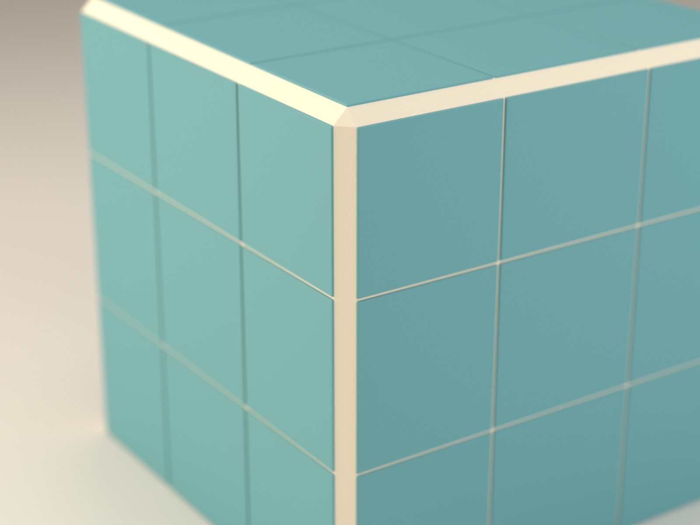
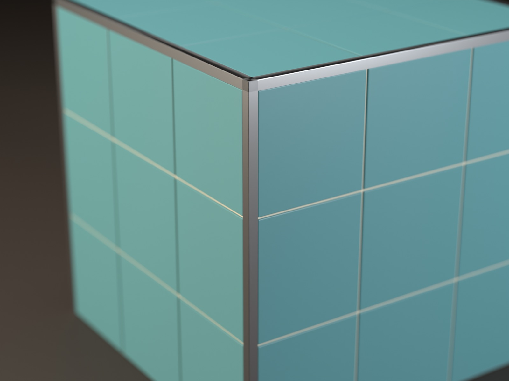
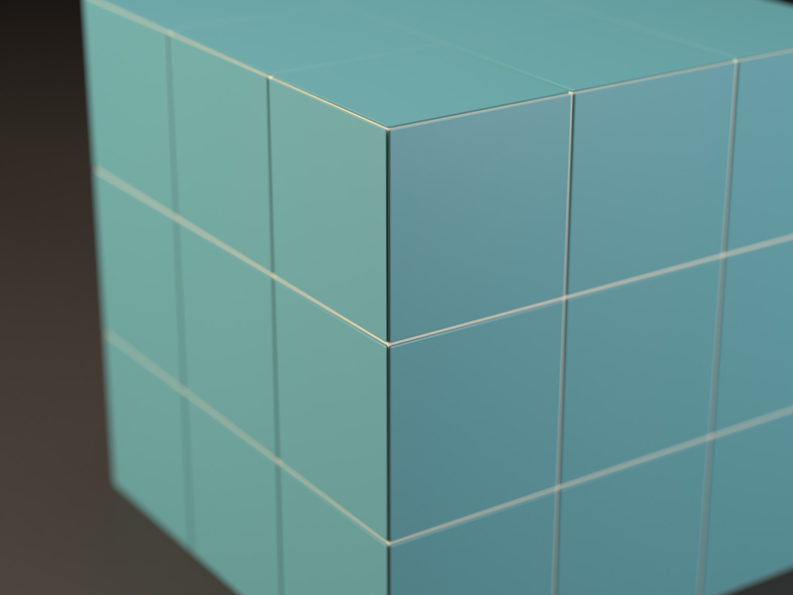
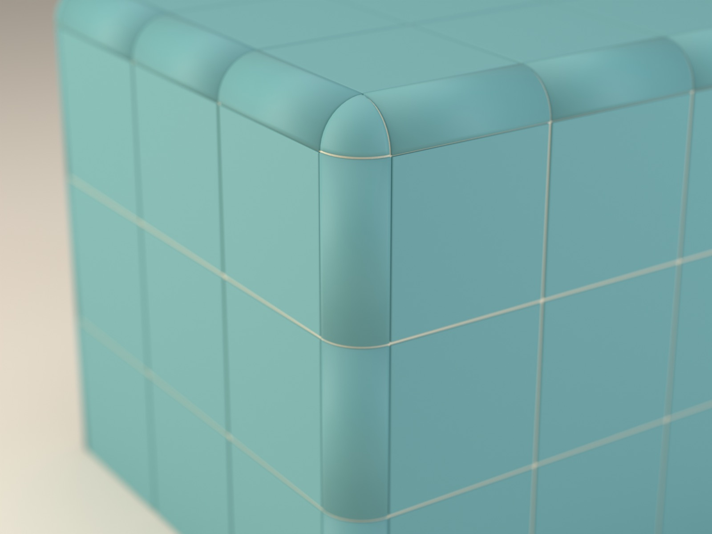
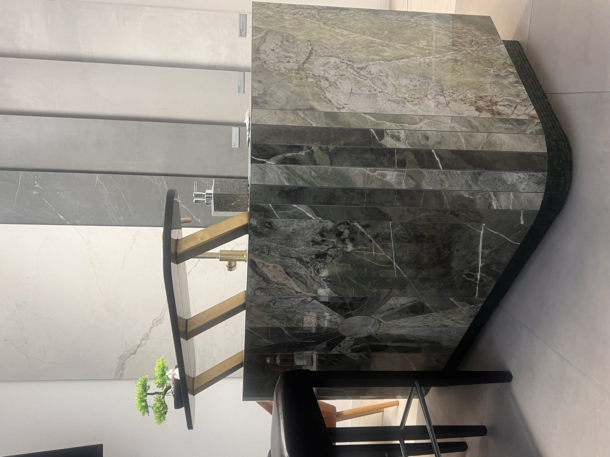
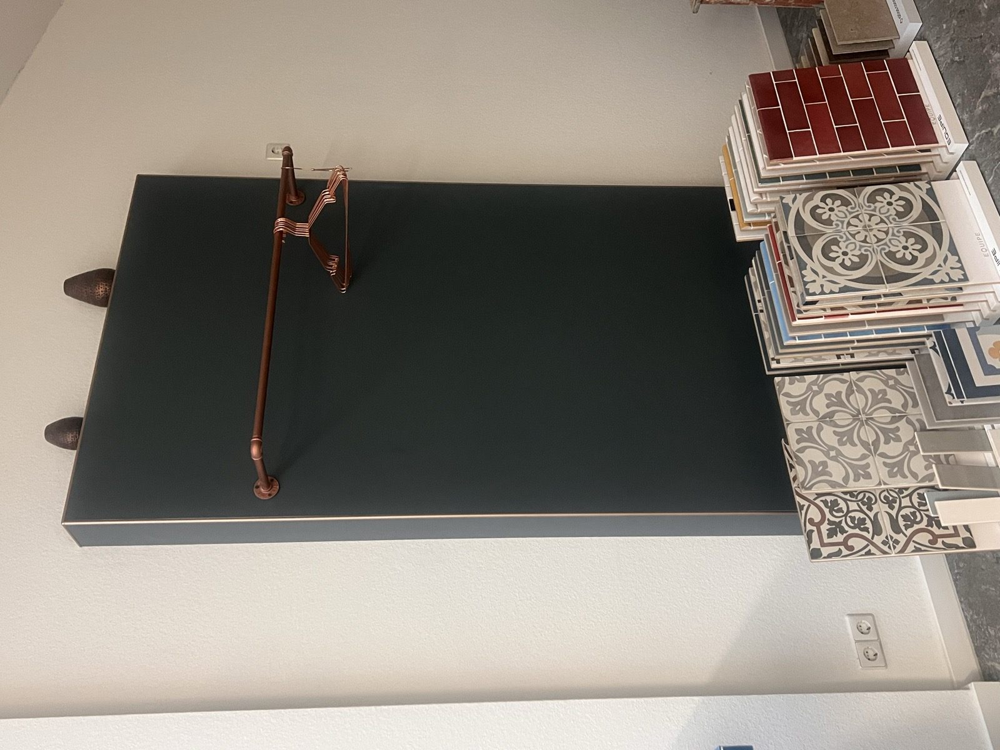
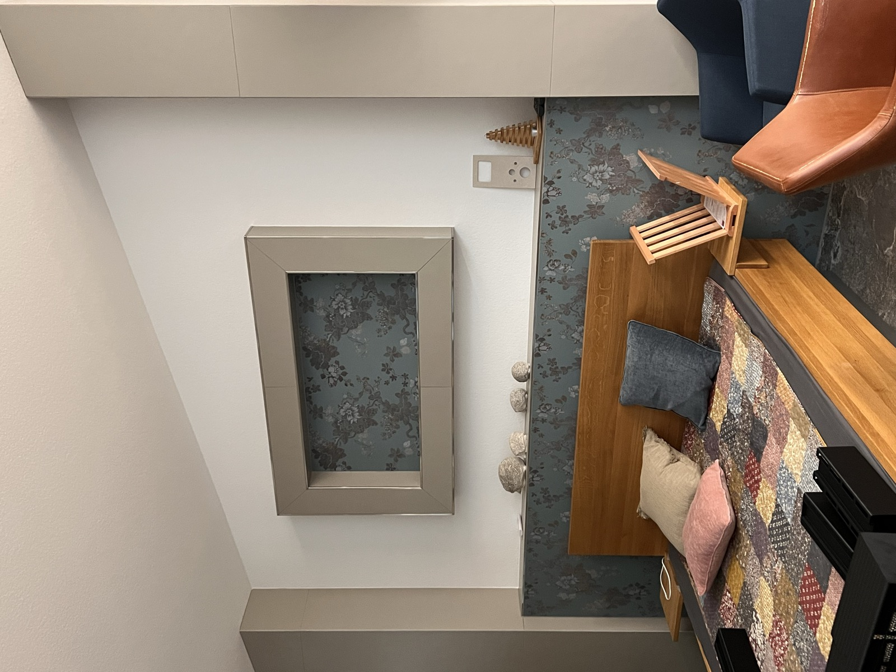

Eine Abschlussschiene unterbricht das durchlaufende Fugenbild optisch – genauso wie eine zu breite Fuge an der Kante.
Darum schneiden wir jede Außenkante auf 45° (Taglio) oder setzen einen Viertelstab im Raster der Fliese (Tondo). So läuft die Fuge ohne Unterbrechung um jede Ecke.
Fliesen Verlege GmbH, Konstanz, seit 1977. Jedes Stück von Hand verlegt und verfugt.




Die Fliesen enden vor der Kante, Fugmaterial schließt die Ecke.
So bauen wir: auf Gehrung oder mit Viertelstab.
Kollektion
Zwei Serien, ein Handwerk. Die Nummer verrät das Stück: Die Hunderter nennen die Serie, die Zehner die Art. Taglio 111 und Tondo 211 sind beide Couchtische, einmal eckig, einmal rund.
Tondo Neu
Serie 200 · Viertelstab statt Gehrung: weiche Kanten, die Fuge läuft über die Rundung.
Taglio
Serie 100 · Jede Außenkante auf Gehrung.
„Schnittkante ist nie gleich Werkkante.“
Stell dir dein Stück zusammen.
Farbe, Fuge, Muster, Optionen: Du siehst jede Änderung sofort in 3D, der Preis läuft mit.
ZuschnittJede Außenkante auf Gehrung geschnitten, im Winkel von 45°. Bei Tondo sitzt stattdessen der Viertelstab, im Fugenraster und nie zugeschnitten.
VerlegenFliese für Fliese, rundum im 10-cm-Raster.
VerfugenVon Hand angepasst, bis die Fuge über jede Kante läuft.
SigniertUnter jedem Stück eine Plakette mit Nummer, Datum und dem Namen des Fliesenlegers, der es gebaut hat.
Farben wirken in deinem Licht anders als am Bildschirm. Such dir bis zu fünf Fliesen aus, wir legen eine Fugenprobe dazu und schicken dir alles nach Hause.
Einzelstücke und Ideen aus unserer Werkstatt. Gefällt dir eins? Frag es an, wir bauen es gern für dich.
Konfigurator
Ziehen dreht das Stück. Jede Änderung siehst du sofort, der Preis läuft mit.
Ziehen zum Drehen
Stück
Alle Außenkanten auf Gehrung geschnitten.
Farbwelt
Eigene Auswahl
Muster
OberflächeFeinsteinzeug, 10 × 10
Fuge
Standard-Fuge · ohne Aufpreis
Bildschirmfarben können abweichen. Fliesenmuster schicken wir dir gern zu.
Preise
In den 8 Farbwelten zum Grundpreis. Muster und eigene Auswahl kosten einheitlich 25 % mehr, egal wie viel du änderst. Bunte Fugen aus Reaktionsharz (Sondermischung) kosten pauschal 250 € je Stück extra. Stücke aus der Werkstatt bauen wir auf Anfrage, mit eigenem Angebot.
Stück
Maße
Farbwelt
Muster oder eigene Auswahl
Hier fehlt eine Fliese.
Diese Seite gibt es nicht, vielleicht ein alter Link. Hier geht es weiter:
Berufsbezeichnung: Fliesen-, Platten- und Mosaikleger (verliehen in der Bundesrepublik Deutschland) Zuständige Kammer: Handwerkskammer Konstanz, Webersteig 3, 78462 Konstanz Berufsrechtliche Regelung: Gesetz zur Ordnung des Handwerks (Handwerksordnung), einsehbar unter gesetze-im-internet.de
Verantwortlich für den Inhalt nach § 18 Abs. 2 MStV
Florian Martin, Reisstraße 9, 78467 Konstanz
Verbraucherstreitbeilegung
Wir sind nicht bereit und nicht verpflichtet, an Streitbeilegungsverfahren vor einer Verbraucherschlichtungsstelle teilzunehmen.
Datenschutz
Wir behandeln deine Daten vertraulich und nutzen sie nur, soweit es für den Besuch dieser Seite und die Bearbeitung deiner Anfrage nötig ist. Diese Seite setzt keine Cookies, verwendet keine Analyse- oder Werbedienste und speichert nichts in deinem Browser.
Beim Aufruf speichert unser Hosting-Anbieter technisch notwendige Daten: IP-Adresse, Datum und Uhrzeit, aufgerufene Seite, Browser und Betriebssystem, zuvor besuchte Seite. Das dient dem sicheren und stabilen Betrieb der Seite (Art. 6 Abs. 1 lit. f DSGVO). Die Daten werden nach spätestens [7] Tagen gelöscht. Hosting-Anbieter: [Name und Anschrift des Hosters der FVG-Homepage], mit dem ein Vertrag zur Auftragsverarbeitung besteht.
3. Anfrage und Musterbestellung
Wenn du uns eine Anfrage schickst, öffnet sich dein eigenes E-Mail-Programm mit einer vorbereiteten Nachricht. Erst wenn du sie dort abschickst, erhalten wir deine Angaben (Name, E-Mail, auf Wunsch Telefon, PLZ und Ort, Nachricht, gewählte Möbel und Farben). Wir nutzen sie, um dir ein Angebot zu machen, Muster zu schicken und einen Vertrag abzuwickeln (Art. 6 Abs. 1 lit. b DSGVO). Kommt kein Auftrag zustande, löschen wir deine Anfrage nach spätestens [12] Monaten. Bei einem Auftrag bewahren wir die Unterlagen so lange auf, wie es Handels- und Steuerrecht vorschreiben (in der Regel 6 bzw. 10 Jahre).
4. Lieferung
Für die Lieferung geben wir Name, Lieferanschrift und, falls für die Terminabsprache nötig, Telefonnummer an das beauftragte Paket- oder Speditionsunternehmen weiter (Art. 6 Abs. 1 lit. b DSGVO).
5. Schriften und 3D-Konfigurator
Schrift und 3D-Konfigurator liegen auf unserem eigenen Server. Beim Besuch dieser Seite werden keine Daten an Google oder andere Drittanbieter übertragen.
6. Deine Rechte
Du hast das Recht auf Auskunft (Art. 15 DSGVO), Berichtigung (Art. 16), Löschung (Art. 17), Einschränkung der Verarbeitung (Art. 18), Datenübertragbarkeit (Art. 20) und Widerspruch gegen Verarbeitungen auf Grundlage berechtigter Interessen (Art. 21). Eine Einwilligung kannst du jederzeit für die Zukunft widerrufen. Schreib uns dazu einfach an info@fvg-fliesen.de.
Außerdem kannst du dich bei einer Datenschutz-Aufsichtsbehörde beschweren, zum Beispiel beim Landesbeauftragten für den Datenschutz und die Informationsfreiheit Baden-Württemberg, Lautenschlagerstraße 20, 70173 Stuttgart.
Für Möbel aus unserer Kollektion in den angebotenen Farbwelten hast du als Verbraucher ein Widerrufsrecht. Für Stücke nach deiner eigenen Auswahl (eigene Farben, Muster, Sondermaße, Sonderanfertigungen) besteht es nicht, siehe unten. Die gesetzliche Belehrung ist in der Sie-Form gehalten.
Widerrufsrecht
Sie haben das Recht, binnen vierzehn Tagen ohne Angabe von Gründen diesen Vertrag zu widerrufen. Die Widerrufsfrist beträgt vierzehn Tage ab dem Tag, an dem Sie oder ein von Ihnen benannter Dritter, der nicht der Beförderer ist, die Waren in Besitz genommen haben bzw. hat.
Um Ihr Widerrufsrecht auszuüben, müssen Sie uns (FVG Fliesen-Verlege-GmbH, Reisstraße 9, 78467 Konstanz, Telefon 07531 690696, E-Mail info@fvg-fliesen.de) mittels einer eindeutigen Erklärung (z. B. ein mit der Post versandter Brief oder eine E-Mail) über Ihren Entschluss, diesen Vertrag zu widerrufen, informieren. Sie können dafür das beigefügte Muster-Widerrufsformular verwenden, das jedoch nicht vorgeschrieben ist.
Zur Wahrung der Widerrufsfrist reicht es aus, dass Sie die Mitteilung über die Ausübung des Widerrufsrechts vor Ablauf der Widerrufsfrist absenden.
Folgen des Widerrufs
Wenn Sie diesen Vertrag widerrufen, haben wir Ihnen alle Zahlungen, die wir von Ihnen erhalten haben, einschließlich der Lieferkosten (mit Ausnahme der zusätzlichen Kosten, die sich daraus ergeben, dass Sie eine andere Art der Lieferung als die von uns angebotene, günstigste Standardlieferung gewählt haben), unverzüglich und spätestens binnen vierzehn Tagen ab dem Tag zurückzuzahlen, an dem die Mitteilung über Ihren Widerruf dieses Vertrags bei uns eingegangen ist. Für diese Rückzahlung verwenden wir dasselbe Zahlungsmittel, das Sie bei der ursprünglichen Transaktion eingesetzt haben, es sei denn, mit Ihnen wurde ausdrücklich etwas anderes vereinbart; in keinem Fall werden Ihnen wegen dieser Rückzahlung Entgelte berechnet.
Wir können die Rückzahlung verweigern, bis wir die Waren wieder zurückerhalten haben oder bis Sie den Nachweis erbracht haben, dass Sie die Waren zurückgesandt haben, je nachdem, welches der frühere Zeitpunkt ist.
Sie haben die Waren unverzüglich und in jedem Fall spätestens binnen vierzehn Tagen ab dem Tag, an dem Sie uns über den Widerruf dieses Vertrags unterrichten, an uns zurückzusenden oder zu übergeben. Die Frist ist gewahrt, wenn Sie die Waren vor Ablauf der Frist von vierzehn Tagen absenden.
Sie tragen die unmittelbaren Kosten der Rücksendung der Waren. Bei Waren, die per Paket versandt werden können, betragen diese Kosten etwa [39] EUR. Bei Waren, die wegen ihrer Beschaffenheit nicht normal mit der Post zurückgesandt werden können, werden die Kosten auf höchstens etwa [250] EUR geschätzt.
Sie müssen für einen etwaigen Wertverlust der Waren nur aufkommen, wenn dieser Wertverlust auf einen zur Prüfung der Beschaffenheit, Eigenschaften und Funktionsweise der Waren nicht notwendigen Umgang mit ihnen zurückzuführen ist.
Ausschluss des Widerrufsrechts
Das Widerrufsrecht besteht nicht bei Verträgen zur Lieferung von Waren, die nicht vorgefertigt sind und für deren Herstellung eine individuelle Auswahl oder Bestimmung durch den Verbraucher maßgeblich ist oder die eindeutig auf die persönlichen Bedürfnisse des Verbrauchers zugeschnitten sind (§ 312g Abs. 2 Nr. 1 BGB). Das betrifft bei uns Möbel mit selbst gewählten Fliesen- oder Fugenfarben, Mustern, Sondermaßen sowie Sonderanfertigungen. Im Angebot steht jeweils, ob ein Widerrufsrecht besteht.
Muster-Widerrufsformular
(Wenn Sie den Vertrag widerrufen wollen, dann füllen Sie bitte dieses Formular aus und senden Sie es zurück.)
An FVG Fliesen-Verlege-GmbH, Reisstraße 9, 78467 Konstanz, E-Mail info@fvg-fliesen.de:
Hiermit widerrufe(n) ich/wir (*) den von mir/uns (*) abgeschlossenen Vertrag über den Kauf der folgenden Waren (*)/die Erbringung der folgenden Dienstleistung (*)
– Bestellt am (*)/erhalten am (*)
– Name des/der Verbraucher(s)
– Anschrift des/der Verbraucher(s)
– Unterschrift des/der Verbraucher(s) (nur bei Mitteilung auf Papier)
– Datum
(*) Unzutreffendes streichen.
AGB & Lieferbedingungen
1. Geltungsbereich
Diese Bedingungen gelten für alle Verträge über Möbel von FMK Furniture by FVG zwischen der FVG Fliesen-Verlege-GmbH (im Folgenden „wir“) und unseren Kunden, Verbrauchern wie Unternehmern. Für Bau- und Montageleistungen der FVG außerhalb von FMK gelten deren eigene Bedingungen.
2. Vertragsschluss
Die Darstellung der Möbel auf dieser Seite und der Konfigurator sind noch kein Angebot. Mit deiner Anfrage bittest du uns unverbindlich um ein Angebot. Wir schicken dir ein schriftliches Angebot per E-Mail mit Möbel, Farben, Preis, Lieferweg, Lieferkosten und Lieferzeit. Es ist 14 Tage gültig. Der Vertrag kommt zustande, wenn du das Angebot schriftlich (auch per E-Mail) annimmst. Die Vertragssprache ist Deutsch. Den Vertragstext speichern wir; du erhältst ihn mit der Auftragsbestätigung.
3. Preise und Zahlung
Alle Preise sind Endpreise in Euro inklusive der gesetzlichen Mehrwertsteuer, zuzüglich Lieferkosten, die im Angebot ausgewiesen werden. Nach Vertragsschluss stellen wir eine Anzahlung von [50] % in Rechnung; mit ihrem Eingang beginnt die Fertigung. Der Rest ist fällig, sobald wir dir die Fertigstellung melden, spätestens vor der Auslieferung. Zahlung per Überweisung.
4. Lieferzeit
Wir fertigen jedes Stück nach der Bestellung von Hand. Die Lieferzeit steht im Angebot und beginnt mit dem Eingang der Anzahlung. Sie beträgt derzeit in der Regel 6 bis 8 Wochen, bei Sonderfugen 1 bis 2 Wochen mehr. Den Liefertermin stimmen wir mit dir ab.
5. Lieferung und Gefahrübergang
Wir liefern als Paket, per Spedition oder selbst mit Aufstellung, wie im Angebot vereinbart (siehe Versand & Lieferung). Liefergebiet ist Deutschland, andere Länder nach Absprache. Bei Verbrauchern geht die Gefahr erst mit der Übergabe der Ware auf dich über. Bei Unternehmern geht sie mit der Übergabe an das Transportunternehmen über.
6. Transportschäden
Bitte prüfe die Sendung bei der Annahme auf äußere Schäden, lass sichtbare Schäden auf dem Lieferschein vermerken und melde dich möglichst schnell bei uns. Das hilft uns, Ansprüche gegenüber dem Transportunternehmen durchzusetzen. Deine gesetzlichen Rechte bleiben davon unberührt.
7. Eigentumsvorbehalt
Die Möbel bleiben bis zur vollständigen Bezahlung unser Eigentum.
8. Handwerkliche Fertigung
Jedes Stück wird von Hand verlegt und verfugt. Kleine Unterschiede im Fugenbild sowie leichte Farbabweichungen zwischen Fliesen verschiedener Produktionschargen und gegenüber der Darstellung am Bildschirm sind materialtypisch und gehören zur vereinbarten Beschaffenheit. Der 3D-Konfigurator zeigt die Farben nur annähernd; verbindlich sind die Fliesenmuster und das Angebot.
9. Gewährleistung
Es gelten die gesetzlichen Mängelrechte. Gegenüber Unternehmern beträgt die Verjährungsfrist für Mängelansprüche ein Jahr ab Ablieferung, soweit gesetzlich zulässig.
10. Haftung
Wir haften unbeschränkt bei Vorsatz und grober Fahrlässigkeit, bei Verletzung von Leben, Körper oder Gesundheit sowie nach dem Produkthaftungsgesetz. Bei leicht fahrlässiger Verletzung wesentlicher Vertragspflichten ist die Haftung auf den vertragstypischen, vorhersehbaren Schaden begrenzt. Im Übrigen ist die Haftung für leichte Fahrlässigkeit ausgeschlossen.
11. Widerrufsrecht
Verbrauchern steht ein Widerrufsrecht nach Maßgabe der Widerrufsbelehrung zu.
12. Schlussbestimmungen
Es gilt das Recht der Bundesrepublik Deutschland unter Ausschluss des UN-Kaufrechts. Bei Verbrauchern gilt diese Rechtswahl nur, soweit dadurch nicht der Schutz zwingender Bestimmungen des Staates entzogen wird, in dem sie ihren gewöhnlichen Aufenthalt haben. Ist der Kunde Kaufmann, ist Gerichtsstand Konstanz. Zur Teilnahme an einem Streitbeilegungsverfahren vor einer Verbraucherschlichtungsstelle sind wir nicht bereit und nicht verpflichtet.
Gut verpackt, sicher geliefert.
Jedes Stück wird bei uns in Konstanz gebaut und von dort auf den Weg gebracht. Kleine Möbel kommen als Paket, alles Größere per Spedition oder bei uns in der Region direkt von uns.
Drei Wege zu dir
Welcher Weg passt, hängt von Größe und Gewicht ab. Auf jeder Produktseite steht, wie das Stück geliefert wird.
FestpreisPaketFür kleine, leichte Stücke wie den Kubus. Stabil verpackt mit Kantenschutz, Zustellung an die Haustür.39 € innerhalb Deutschlands
nach AngebotSpeditionFür Couchtische, Bars, Sideboards und Pflanzkübel. Auf Palette, gesichert in Kiste oder Rahmen, mit Terminabsprache. Bis zur Bordsteinkante, auf Wunsch bis in die Wohnung.Kosten im Angebot, je nach PLZ und Gewicht
nach AngebotLieferung & AufstellenAm Bodensee und in der Region bringen wir das Möbel selbst, stellen es auf und nehmen die Verpackung wieder mit. Tresen und Sonderanfertigungen montieren wir vor Ort.Kosten im Angebot, je nach Entfernung
Selbst abholen geht auch: kostenlos in Konstanz, nach Vereinbarung.
Von der Anfrage bis zu dir
AnfrageDu stellst dir dein Stück zusammen und schickst uns die Anfrage mit PLZ.
AngebotInnerhalb von zwei Werktagen, mit Möbel, Lieferweg und Versandkosten.
AnzahlungMit deiner Zusage und der Anzahlung beginnt die Fertigung.
FertigungLagerstücke (Kuben und Wandregale in Salvia, Kontrast und Aloe) gehen sofort raus. Alles andere rund 6 bis 8 Wochen, bei bunten Sonderfugen etwas länger.
LieferungWir melden uns, wenn dein Stück fertig ist, und stimmen den Termin mit dir ab.
Verpackt wie Handwerk
Fliesenmöbel sind schwer und robust, nur die Kanten mögen keine Stöße. Darum schützen wir sie besonders.
KantenschutzAlle Ecken und Kanten sind einzeln gepolstert, auch die Gehrungen.
Feste HülleKleine Stücke im doppelwandigen Karton, große in Kiste oder Holzrahmen auf Palette.
Leer geliefertPflanzkübel kommen leer und werden erst am endgültigen Platz befüllt.
VersichertJede Sendung ist versichert. Geht doch etwas zu Bruch, kümmern wir uns.
Wenn etwas beschädigt ankommt
Sendung bei der Annahme kurz von außen ansehen. Sichtbare Schäden auf dem Lieferschein vermerken lassen.
Fotos von Verpackung und Schaden machen.
Uns möglichst innerhalb von 48 Stunden Bescheid geben. Wir tauschen die Fliese aus oder ersetzen das Stück. Deine gesetzlichen Rechte bleiben davon unberührt.
Wohin wir liefern
Nach ganz Deutschland. Österreich und die Schweiz auf Anfrage, für die Schweiz kommen Zoll und Einfuhrumsatzsteuer dazu.
Was kostet die Lieferung zu dir?
Schick uns deine Anfrage mit PLZ, wir rechnen den Versand gleich mit ein.
Versandkosten, Lieferzeiten und Lieferländer sind derzeit Annahmen.
Fragen & Pflege
Das Wichtigste zu Material, Bestellung, Lieferung und Pflege. Deine Frage ist nicht dabei? Schreib uns über die Anfrage.
Möbel & Material
Wie schwer sind die Möbel?
Das hängt vom Stück ab. Ein Kubus ist leicht genug für den Paketversand, ein Couchtisch wiegt je nach Größe rund 30 bis 50 kg, eine Kaffeebar deutlich mehr. Auf jeder Produktseite steht das Gewicht der Fliesen, das Gesamtgewicht nennen wir im Angebot.
Kann man auf dem Kubus sitzen?
Auf dem großen: Taglio 102 (40 cm) und Tondo 202 (45 cm) sind als Hocker gebaut, auf Wunsch mit flacher Sitzauflage aus Wollfilz. Die kleinen, Taglio 101 und Tondo 201, sind Beistelltisch und Pflanzenständer. Genaue Belastungswerte veröffentlichen wir, sobald die Tests mit der ersten Serie abgeschlossen sind.
Können die Möbel draußen stehen?
Die Fliesen sind frostfest. Für draußen gibt es den Pflanzkübel mit der Option Wasserablauf mit Füßen. Die übrigen Möbel sind für innen oder überdachte Plätze gedacht. Für Terrasse oder Gastro-Außenbereich sprich uns an.
Was passiert, wenn eine Fliese beschädigt wird?
Feinsteinzeug ist sehr hart und kratzfest. Sollte trotzdem einmal eine Fliese springen, lässt sie sich einzeln austauschen. Auf Wunsch legen wir Ersatzfliesen in deiner Farbe bei.
Verkratzen die Fliesenkanten meinen Boden?
Nein. Unter jedem Möbel sitzen Filzgleiter oder kleine Füße, damit nichts kratzt und das Möbel nicht direkt auf der Fliesenkante steht.
Sieht jedes Stück genau gleich aus?
Fast. Jede Fliese wird von Hand verlegt und jede Fuge von Hand angepasst, dadurch ist jedes Stück ein bisschen eigen. Zwischen Produktionschargen können Fliesenfarben leicht abweichen.
Bestellung & Preise
Wie bestelle ich?
Stell dir ein Stück zusammen und schick uns eine Anfrage. Du bekommst innerhalb von zwei Werktagen ein Angebot. Mit deiner Zusage und einer Anzahlung beginnen wir mit der Fertigung.
Was kosten eigene Farben und Muster?
Die 8 Farbwelten gibt es zum Grundpreis. Eigene Farben oder ein Muster kosten einheitlich 25 % mehr, egal wie viel du änderst. Bunte Fugen aus Reaktionsharz kosten pauschal 250 € je Stück extra.
Geht es auch in anderen Maßen?
Ja. Wir bauen auf dem 10-cm-Raster der Fliese, Sondermaße und ganz eigene Ideen sind als Sonderanfertigung möglich.
Kann ich Fliesenmuster bekommen?
Ja, mit der Musterbox: bis zu fünf Fliesen deiner Wahl und eine Fugenprobe für 15 € inkl. Versand. Beim Kauf eines Möbels rechnen wir die 15 € an.
Lieferung & Montage
Wie lange dauert es?
Kuben und Wandregale in den Lagerfarben Salvia, Kontrast und Aloe haben wir vorrätig, sie gehen innerhalb weniger Tage raus. Alles andere fertigen wir für dich: derzeit rund 6 bis 8 Wochen nach Anzahlung, bei bunten Sonderfugen etwa 1 bis 2 Wochen mehr.
Wie wird geliefert?
Kleine Stücke wie der Kubus kommen als Paket. Größere Stücke liefern wir per Spedition oder, am Bodensee und in der Region, selbst und stellen sie auf. Große Objekte wie Tresen montieren wir vor Ort. Alles zu Versand & Lieferung
Kann ich die Möbel vorher ansehen?
Gern, in unserer Ausstellung in Konstanz, nach Vereinbarung. Mehr über uns
Pflege
Wie reinige ich die Möbel?
Einfach feucht abwischen, bei Bedarf mit etwas Neutralreiniger. Keine Scheuermittel und keine scharfen, säurehaltigen Reiniger verwenden, sie greifen auf Dauer die Fuge an.
Was ist mit Flecken von Kaffee oder Rotwein?
Die glasierte Fliese nimmt nichts auf. Die Fuge ist etwas empfindlicher: Verschüttetes am besten gleich abwischen. Bunte Fugen aus Reaktionsharz sind besonders unempfindlich.
Was muss ich beim Pflanzkübel beachten?
Nicht dauerhaft überwässern und für Wasserablauf sorgen (Drainage oder Einsatz, je nach Ausführung). Den Kübel leer aufstellen und erst am endgültigen Platz befüllen, befüllt ist er sehr schwer.
Noch eine Frage?
Wir antworten innerhalb von zwei Werktagen.
Nach Maß gebaut.
Für Praxen, Cafés, Hotels, Läden und Büros bauen wir Möbel aus Fliese nach euren Maßen und Farben: Empfangstresen, Theken, Pflanzkübel, Sitzbänke und alles, was dazwischen liegt. Geplant, gebaut und montiert von einem Fliesen-Meisterbetrieb.
Was wir bauen
Empfang & TresenFür Praxen, Kanzleien, Hotels. Auf Wunsch mit Glasbausteinen, Arbeitsseite und Kabelführung.
Theken & BarsKaffeebars, Ausgabetheken, Stehtische für Cafés und Gastronomie. Pflegeleicht und robust.
Pflanzen & RaumteilerPflanzkübel zum direkten Bepflanzen, auch als Reihe oder Raumteiler, innen wie außen.
Sitzen & AblegenSitzbänke, Podeste, Sideboards und Nischen für Wartebereiche, Läden und Büros.
Warum mit uns
Eure FarbenÜber 50 Fliesenfarben und viele Fugenfarben, abgestimmt auf euer Corporate Design. Sonderserien auf Anfrage.
Alles aus einer HandMöbel, Boden und Wand vom selben Betrieb: Fliesen, Fugen und Raster passen zusammen.
Planung für PlanerTechnische Zeichnungen, 3D-Ansichten und Materialangaben für Architekten und Innenarchitekten.
Montage vor OrtLieferung und Montage am Bodensee und in der Region, deutschlandweit nach Absprache.
So läuft ein Projekt
AnfrageIhr beschreibt Raum, Idee und Zeitrahmen, gern mit Skizze oder Foto.
BeratungGespräch und, in der Region, Aufmaß vor Ort. Fliesenmuster bringen wir mit.
Entwurf & AngebotZeichnung, 3D-Ansicht und ein festes Angebot.
FertigungKorpus, Fliesen auf Gehrung, Fuge. Ab ca. 8 Wochen, je nach Umfang.
MontageLieferung, Aufbau und Übergabe vor Ort.
Beispiele
Ein Auszug aus dem, was entstanden ist und gerade entsteht.
Empfangstresen für eine Praxis180 cm, hohes Portal mit gefliesten Wangen und Deckel, vorne 40 Glasbausteine. Gerade im Bau.

Tresen in MarmoroptikGroßformat mit Strahlenmuster, runder Ecke und Messingablage. Ausstellung Konstanz.
Pflanzkübel50 cm, innen abgedichtet, direkt bepflanzbar. Auch als Reihe oder in anderen Maßen.
Projekt anfragen
Erzählt uns kurz, was ihr vorhabt. Wir melden uns innerhalb von zwei Werktagen.
Für Planer: Gern schicken wir Materialdaten und Fliesenmuster vorab.
Material, das bleibt.
Wir verwenden dieselben Materialien wie in Bädern und auf Terrassen: glasiertes Feinsteinzeug, Fugenmörtel aus dem Profibereich und stabile Korpusse. Was dort jahrzehntelang hält, hält auch als Möbel.
Fliesen
Glasiertes Feinsteinzeug aus Italien im Format 10 × 10 cm, 6,8 mm stark, frostfest und unempfindlich gegen Flecken. 54 Farben: 38 matt und 16 glänzend.
Tippe auf eine Farbe, um sie als Muster vorzumerken. Bildschirmfarben können vom Original abweichen, darum gibt es den Musterservice.
Fugen
Standard ist ein flexibler Fugenmörtel aus dem Profibereich in 27 Farben, ohne Aufpreis. Für bunte Fugen, etwa Gelb, Rot oder Blau, mischen wir Reaktionsharz in deiner Wunschfarbe an. Das ist aufwendiger und kostet pauschal 250 € je Stück extra.
Bunte Sonderfugen (Beispiele):
Korpus und Verarbeitung
TrägerplattenFür kleinere Stücke wie Kubus und Pflanzkübel: Hartschaum-Trägerplatten mit Zementbeschichtung. Leicht, formstabil und ideal als Verlegeuntergrund.
HolzFür große und tragende Stücke wie die Kaffeebar: ein Korpus vom Schreiner, auf das Fliesenraster maßgefertigt.
AbgedichtetPflanzkübel sind innen abgedichtet und können direkt bepflanzt werden.
Gehrung (Taglio)Jede Außenkante wird auf Gehrung geschnitten, damit die Fuge über die Ecke gleich breit bleibt wie auf der Fläche.
Viertelstab (Tondo)Runde Kanten aus Formstücken in Fliesenfarbe: Viertelstab 2,5 cm und Kugelecken, jedes Stück 10 cm lang im Fugenraster und nie zugeschnitten.
Musterbox bestellen
Merke dir bis zu fünf Farben vor. Wir schicken dir die Fliesen mit einer Fugenprobe zu, damit du Farbe und Oberfläche in deinem Licht sehen kannst. 15 € inkl. Versand, beim Kauf eines Möbels angerechnet.
Fliese kann mehr.
Seit 1977 verlegt die FVG Fliesen in Konstanz und am Bodensee: in Bädern, Küchen, auf Balkonen und Terrassen. Irgendwann haben wir angefangen, die Fliese aus ihrem gewohnten Platz zu holen. Daraus ist FMK Furniture entstanden, Möbel aus Fliese, gebaut mit dem Handwerk eines Fliesen-Meisterbetriebs.
Wie es angefangen hat
In unserer Ausstellung zeigen wir Fliese als Gestaltungsobjekt, weit weg von Wand und Boden. Diese Stücke haben die Idee zu FMK geliefert.

GarderobeGroßformatige Fliese in Petrol, Kanten und Kleiderstange aus Kupfer.

Rückwand im SchlafzimmerFlorales Dekor als Bettrückwand, darüber ein gefliester Rahmen, an den Ecken auf Gehrung.Ein MeisterstückEin asiatisch angehauchter Tresen aus Fliese, entstanden als Meisterstück in unserem Team.
Gehrung oder ViertelstabEckig wird jede Außenkante auf Gehrung geschnitten, rund sitzt ein Viertelstab im Fugenraster. So entsteht ein umlaufend gleichbleibendes Fugenbild.
Auf dem RasterJedes Stück ist auf das Fliesenraster geplant, damit die Fugen rundum aufgehen.
Von HandJede Fliese wird von Hand verlegt und jede Fuge von Hand angepasst. Kein Stück ist exakt wie das andere.
Bewährtes MaterialGlasiertes Feinsteinzeug, Fugenmörtel aus dem Profibereich, Korpusse aus Trägerplatten oder Holz, je nach Stück.
FMK Furniture gehört zur FVG Fliesen Verlege GmbH, einem Familienunternehmen in dritter Generation mit rund 20 Mitarbeitenden. Gebaut werden die Möbel von den Fliesenlegern, die sonst Bäder in der Region verlegen, mit derselben Sorgfalt.
Ansprechpartner für FMK: Florian Martin und Markus Brunner.
Ansehen in Konstanz
Unsere Möbel und die Ausstellungsstücke kannst du in der FVG-Ausstellung ansehen und anfassen, Fliesenmuster inklusive.